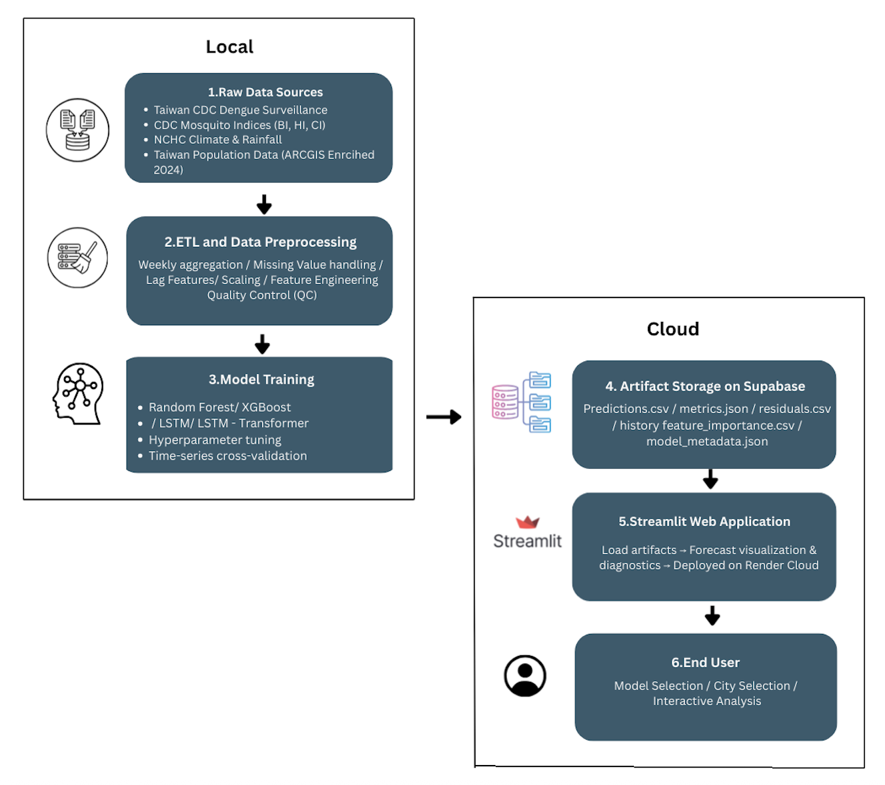

2. Methodology & Models
This project builds an end-to-end forecasting pipeline that links
multi-source dengue, climate, and mosquito surveillance data to
city-specific models for Kaohsiung, Tainan, and Pingtung. Models are
trained on 2010–2021 data and evaluated on a held-out 2022–2024 test
window.
2.1 End-to-End Forecasting Pipeline
The workflow has four main stages: (1) raw data ingestion from Taiwan
CDC, mosquito inspections, NCHC climate feeds, and population
statistics; (2) local ETL and preprocessing to build a clean weekly
city-level time series; (3) model training and validation using Random
Forest, XGBoost, LSTM, and LSTM–Transformer; and (4) cloud storage of
model artifacts in Supabase, which are then visualized in a Streamlit
web app deployed on Render.

2.2 Data Sources & Database Management
Four primary datasets are integrated: (1) weekly dengue cases from
Taiwan CDC (2010–2024); (2) mosquito larval indices (BI, HI, CI) from
field inspections; (3) daily meteorological and rainfall data from
NCHC; and (4) city-level population density derived from official
statistics and ArcGIS enrichment. All raw data are cleaned and merged
locally in Python. After training, model outputs, such as
predictions.csv, metrics.json,
residuals.csv, history.csv, and
feature_importance.csvare uploaded to Supabase Cloud
Storage. This centralized, versioned store allows the Streamlit app to
retrieve artifacts on demand without re-running models.
2.3 ETL, Cleaning & Feature Engineering
Daily dengue, climate, and mosquito data are aggregated to weekly
city-level time series to match epidemiological reporting cycles.
Missing case counts are treated as true zeros, meteorological gaps are
filled via time-based interpolation, and mosquito indices are
forward/backward filled between inspections. Implausible sentinel
values are removed and temperature consistency constraints (Tmin ≤
Tmean ≤ Tmax) are enforced. For tree-based models, engineered lag
features (1, 2, 4, 8, 10, 11, 12, 15 weeks) are created for cases,
rainfall, temperature, humidity, windspeed, and BI/HI/CI. Continuous
variables are standardized with z-scores for Random Forest/XGBoost and
Min–Max scaled for deep learning models.
2.4 Modeling Setup
-
Task:
One-week-ahead prediction of weekly dengue cases, with a separate
model per city.
-
Data splits:
Train 2010–2017, validation 2018–2021, test 2022–2024
(chronological, no shuffling).
-
Validation:
Time-series cross-validation for Random Forest/XGBoost; fixed
validation window with early stopping for LSTM-based models.
-
Metrics:
MSE, RMSE, MAE, MAPE, and R² evaluated on the held-out test period.
2.5 Models & Architectures
Random Forest
Random Forest models were optimized using a time-series aware
hyperparameter search. The search explored the number of trees
(300–700), maximum tree depth (none, 15, 25), minimum split
requirements, and feature subsampling ratios (0.7, 1.0, √p).
Bootstrap sampling was enabled. The best configuration for each
city was selected based on validation MAE.
XGBoost
XGBoost models were tuned using a targeted grid search designed
for time-series forecasting. The search explored tree depth (2–8),
learning rates (0.01–0.07), number of boosting rounds (500–800),
and sampling ratios for rows (0.8–1.0) and features (0.8–1.0). A
fixed random seed ensured reproducibility. XGBoost consistently
achieved the lowest RMSE and highest R² across cities.
LSTM (Lag Features)
The LSTM (Lag Features) model first engineers 1–2 week lags of
dengue cases, rainfall, temperature, humidity, windspeed, and
mosquito indices (BI, HI, CI), then feeds standardized 24-week
input windows into a stacked LSTM network. The model is trained on
log-transformed cases using Adam optimization, early stopping, and
sample weighting to give more importance to outbreak weeks.
LSTM–Transformer
The LSTM–Transformer model was tuned using a small, focused
hyperparameter search designed for limited outbreak data. The
search varied the input window length (4–16 weeks), number of
attention heads (2–4), and transformer feed-forward dimension
(64), while keeping the learning rate (0.001), dropout (0.0), and
batch size (64) fixed. The combination with the lowest validation
loss for each city was selected as the final architecture.
2.6 Deployment & Interactive Visualization
A Streamlit app, deployed on Render, serves as the main interface for
exploring forecasts and diagnostics. The app connects to Supabase to
load predictions, metrics, residuals, training history, and feature
importance per city and model. Users can switch between Kaohsiung,
Tainan, and Pingtung, compare Random Forest, XGBoost, LSTM, and
LSTM–Transformer side by side, and inspect EDA, ACF/PACF plots, and
residual behavior. This design separates heavy offline training from
lightweight cloud delivery, making the system reproducible and easy to
extend.